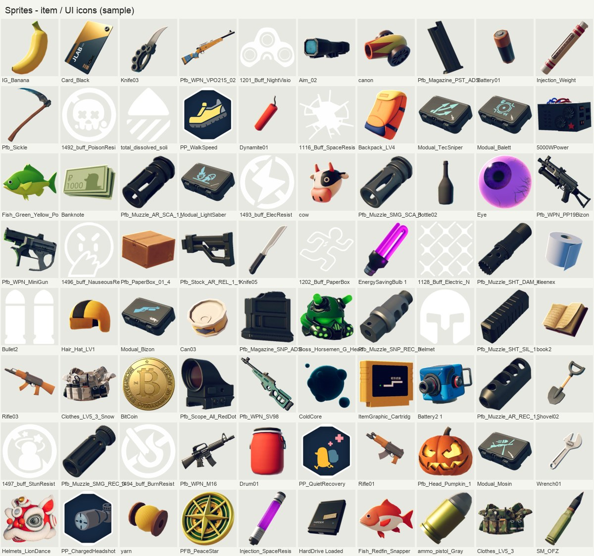
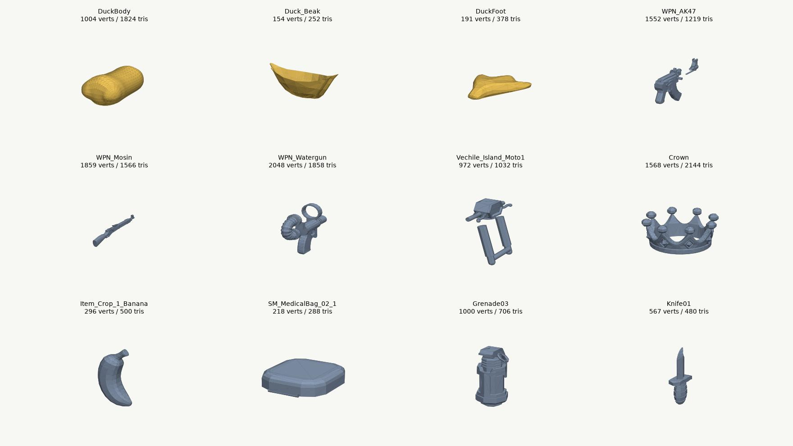
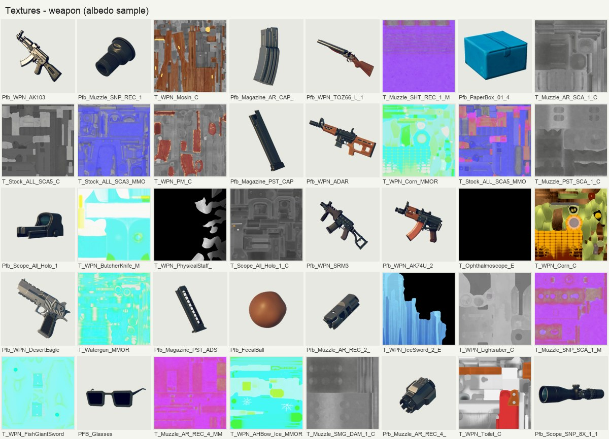
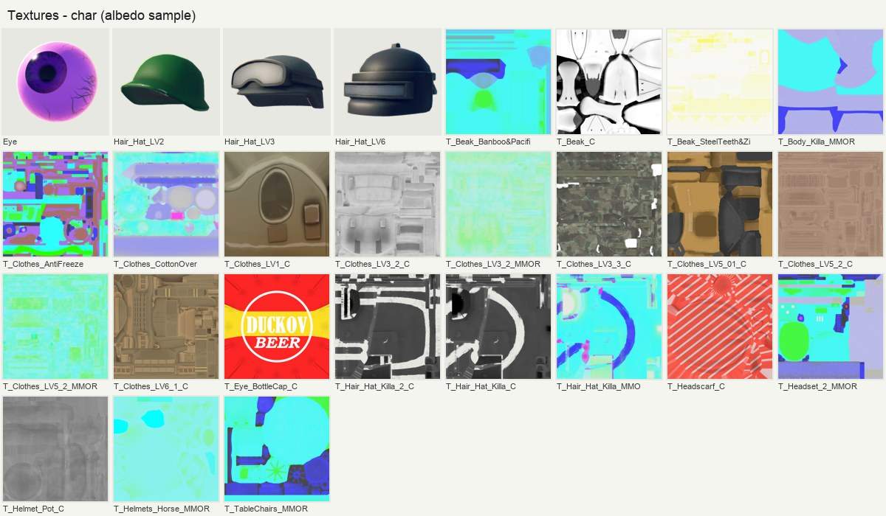
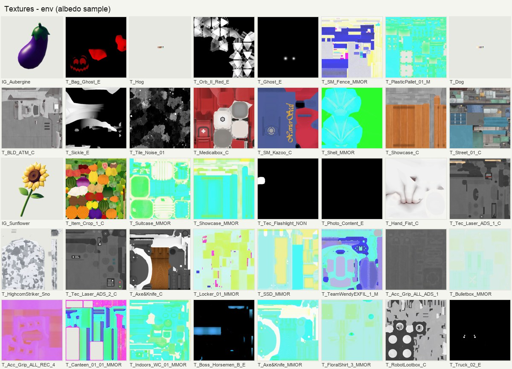

样本：Steam 版 v2.3.30 · build-guid 5ed0f56f… · 开发商 TeamSoda（B站发行）· 拆解日期 2026-11-07
一句话结论：这是一款“插件拼装 + 数据驱动 + 小团队高效”的典型 Unity 中型项目。核心玩法代码集中在一个 1.8MB 的 TeamSoda.Duckov.Core.dll 里，角色/物品/伤害都走统一的 Stat + Item 树；美术用自研 Amplify 着色器 SodaLit + 低模 + 小贴图 + 大量后处理（HBAO、屏幕空间阴影、体积光、描边、战争迷雾）撑起画面质感。
| 类别 | 插件 | 用途推断 |
|---|---|---|
| 角色/移动 | ECM2 (Easy Character Movement 2)Animancer + Animancer.FSMKINEMATION MagicBlend | 物理移动、代码驱动动画（不依赖 Animator 状态机）、上下半身动画混合 |
| AI | A* Pathfinding ProjectNodeCanvas (ParadoxNotion) | 寻路 + 行为树/FSM 可视化编辑（自研 23 个 Action、9 个 Condition 节点） |
| 渲染/画面 | URPHBAOKronnect Umbra 屏幕空间软阴影VLB 体积光束EPO 描边FOW 战争迷雾Tasty Grass ShaderBakery 烘焙MeshCombineStudioShapes / ALINE | 环境光遮蔽、柔和阴影、手电/路灯光柱、交互描边、迷雾、草地、光照贴图、合批、技能范围/瞄准线矢量绘制 |
| UI | TextMeshProLeTai TranslucentImage（毛玻璃）LeTai TrueShadowDOTween ProUISplineRendererOdin | 毛玻璃面板、柔和投影、UI 动效 |
| 镜头 | Cinemachine | 俯视跟随相机、过场 |
| 音频 | FMOD Studio + Resonance | Master.bank 55MB；声音也用于 AI 听觉 |
| 数据/存档 | EasySave3Newtonsoft.JsonMiniExcelFlexReaderSodaLocalization (CSV) | 存档、配置表读取、10 种语言 CSV 本地化 |
| 异步/平台 | UniTaskSteamworks.NETBilibili.BDSRazer Chroma | 异步加载/生成物品、Steam 成就与创意工坊、B站埋点 |
发现彩蛋：打包时把多个插件的 Demo/Examples 也打进去了（ECM2.Examples、EPODemo、ShapesSamples、VLB_Samples、Razer.WyvrnSDK.Tests 等），以及 Duckov_BurstDebugInformation_DoNotShip 目录、本地化目录里的 .idea——属于发布流程没清干净，不影响运行。
根命名空间 531 · Duckov.UI 93 · MiniGames.GoldMiner 65 · Quests 51 · NodeCanvas 节点 32 · PerkTrees 19 · Crops 16 · Buildings 15 · MiniMaps 12 · Modding 8 · Weathers 5 · Economy 3 …
最大的 10 个类：CharacterMainControl 2749 / ItemAgent_Gun 1548 / BubblePopper 1102 / InputManager 936 / GameplayDataSettings 882 / GardenView 827 / LevelManager 791 / BDSManager 769 / AudioManager 726 / SavesSystem 660
不是传统的大状态机，而是“优先级抢占”：新动作优先级 ≥ 当前动作才能打断；每个动作声明自己允许什么（CanMove / CanRun / CanUseHand / CanControlAim）。
enum ActionPriorities { Whatever, Reload, Attack, usingItem, Dash, Skills, Fishing, Interact, ControlOtherCharacter }
// CA_Dash: staminaCost = 10, coolTime = 0.5s, speedCurve 用 AnimationCurve 驱动, 期间 CanMove=false
// CA_Reload: 允许移动、禁用手部；CA_Attack(近战): dealDamageTime = 0.1s
crit = Random() < critRate // ★ “暴击”即“爆头”：暴击时用头甲，否则用身甲
if 玩家受击: dmg *= Rule.DamageFactor_ToPlayer // 难度规则
dmg = base × (crit ? critDamageFactor : 1) × (isZombie ? damageFactorToZombie : 1)
if 非真实伤害:
armor = crit ? HeadArmor : BodyArmor
头盔/护甲耐久 -= armorBreak // 只在 Raid 地图掉耐久
mult = 2 / (clamp(armor - armorPiercing, 0, 999) + 2) // 护甲收益递减曲线
AI 互殴: mult *= 攻方.aiCombatFactor / 守方.aiCombatFactor
dmg *= mult
final = Σ_元素 (dmg × 元素占比 × 目标元素抗性)，单元素最少 1 点 // 物理/火/毒/电/冰…
附带：BoneCrack(骨折) / Wound / Bleed 按 bleedChance 概率上 Buff
护甲曲线示例：甲 2 减伤 50%，甲 4 减 67%，甲 6 减 75%——穿透值直接从护甲里扣，穿甲弹的价值非常直观。天气联动：下雨时火伤 -0.15、电伤 +0.2。
shootCooling → ready → fire → burstEachShotCooling → empty → reloading_recoilBackSpeed=20、_recoilDistance=0.2GunSettingExpend_* 命中触发爆炸、给敌人/自己上 Buff、粘弹等——用组合而非继承做“特殊枪”固定俯视：CameraArm.globalPitch = 55°、globalYaw = -30°、距离 45；GameCamera.defaultFOV = 20°、ADS 15°（小 FOV 远距离 ≈ 近正交的“微缩模型”感）。鼠标射线投到地面得到瞄准点，相机按瞄准偏移前探（defaultAimOffset = 5）。
巧妙之处：镜头的俯仰/偏航/距离做成了自定义 URP VolumeComponent（SodaCraft/CameraArmControl），昼夜参数也走 Volume（TimeOfDayPost）——进入室内/特定区域时，镜头角度和夜晚视野衰减随 Volume 权重自动平滑过渡，关卡美术摆个 Volume 就能调镜头，不用写代码。
TimeOfDayController.NightViewAngleFactor 衰减，夜视仪与手电可抵消；视距不低于 SenseRange-2.5CharacterRandomPreset：敌人模板（血量、阵营、装备池、aiCombatFactor…）按权重随机武器/护甲/外观CharacterSpawnerRoot/Group/Selector 分层刷怪点，WaveCharacterSpawner 波次Rules 控制刷怪数量倍率、玩家受伤倍率Level_X_Main（逻辑/配置）+ 若干子场景（地块、地下室、Boss 房），例：StormZone 有 Main + 1 + B0~B4 六个子场景。RandomItemGenerateDescription：chance + randomCount 区间 + 按 Tag 权重选类别 + 按品质权重选稀有度，再用 ItemFilter 从物品库里筛出候选、UniTask 异步生成。inspectTime 不是固定 1 秒，而是 GameplayDataSettings.Looting.inspectingTimes[品质]——越稀有越久，制造开箱期待感。AddPlayerStorage 扩容。BackupListCount = 10 份滚动备份，记录上次保存时间防回拨Mods/目录或 Steam 创意工坊，每个 Mod 需 info.ini(name/displayName/description) + <name>.dll，入口类约定为 <name>.ModBehaviour，用 Assembly.LoadFrom 反射加载| Shader | 材质数 | Pass | 关键属性 → 用途 |
|---|---|---|---|
| SodaCraft/SodaLit | 408 | GBuffer / Depth / Shadow | MainTex+Tint、MaskTint(局部换色)、NormalMap、MetallicSmoothness；Coverage 覆盖层（雪地图把雪“盖”到所有物体顶面）；_TempratureLerp（热成像） |
| SodaCraft/SodaCharacter | 186 | Forward + GBuffer | _FresnelPower 边缘光让角色从场景里跳出来；_HurtValue 受击闪白；AlphaMask/Cutout；AO_Blend2Albedo |
| SodaLit_EdgeLight | 50 | GBuffer | EdgeLight 轮廓光 + 风噪声顶点摆动（植被） |
| SodaDecal / DecalWaterV2 | 5 | DBuffer | 弹孔、血迹、水渍贴花 |
| 特效类 | ~70 | Forward | SodaSoftParticle、SmokeFireFX（都带 Thermal 颜色）、Lazer、SniperRound、SkillRange、MoveRing、BuildingGrid、Mosaic… |
渲染路径：主场景 Shader 只有 GBuffer 而无 Forward Pass → URP Deferred，所以能放 1650 盏灯（大量点光源营造“夜晚手电/路灯”氛围）。再叠 HBAO + Umbra 屏幕空间软阴影 + 体积光 + 64 张时空蓝噪声(stbn_) 做抖动，低模也能有“微缩模型/桌游”质感。
T_*_C 颜色、_MMOR 打包遮罩、_N 法线、_E 自发光、_M 换色遮罩



